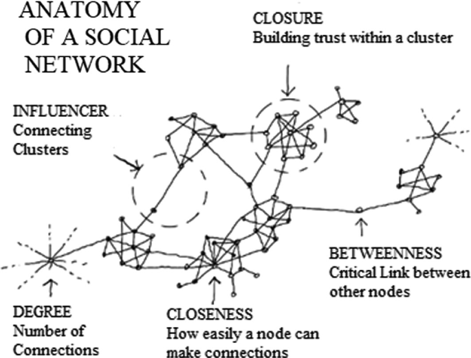
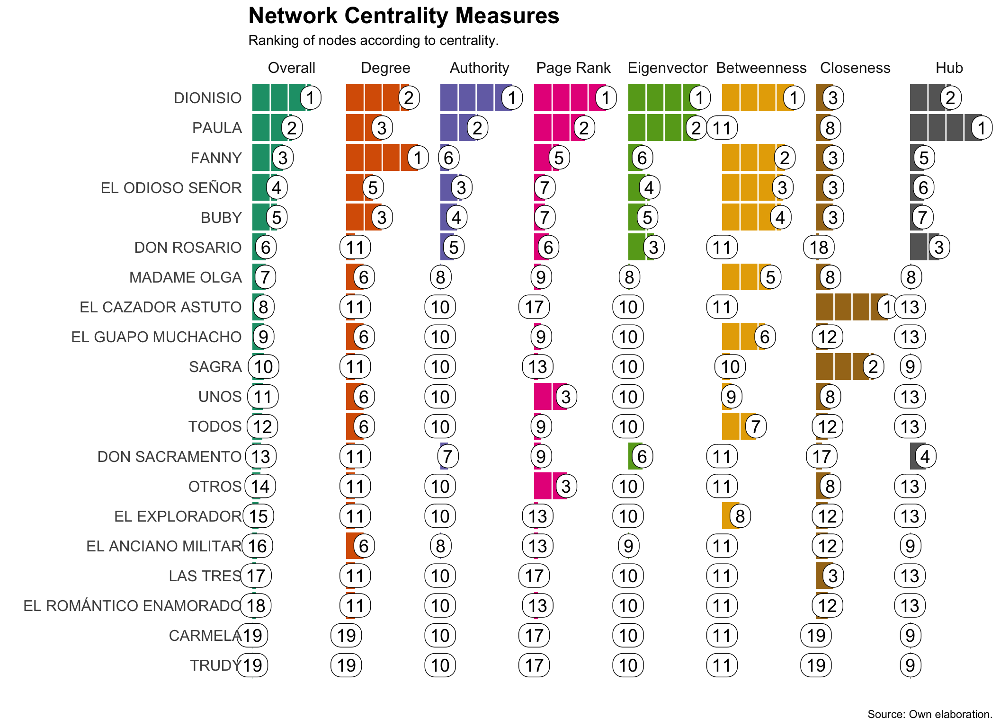

En este segundo documento, utilizaremos la obra de Miguel Mihura, Tres sombreros de copa, para ilustrar un conjunto de técnicas de análisis textual distintas de las que hemos examinado con “La Regenta”. Nuestro objetivo actual consiste en centrar la atención en las redes de diálogo y de palabras para identificar patrones y temas en la obra.
Redes de diálogo
Como podéis ver en el apartado de preparación, hemos estructurado el texto de la obra en una base de datos que contiene los diálogos, el personaje que habla y el receptor del mensaje. A partir de dichas informaciones, podemos emplear técnicas de análisis de redes para identificar patrones de interacción entre los personajes.
El código abajo transforma la base de datos en un objeto de red que puede ser visualizado. En este caso, utilizamos la función simpleNetwork del paquete networkD3 para crear una visualización interactiva de la red de diálogos entre los personajes de la obra.
Código
# carga los datos de la obraload("../textos/Tres_sombreros_de_copa.RData")# Carga el paquetelibrary(igraph)# convierte en un objeto de redg <-graph_from_data_frame(tsc_rd, directed =TRUE)# Define la frecuencia de interacción# como el peso del vínculo entre# los dos personajesE(g)$weight <- tsc_rd$freq# Crea la visualización de la redlibrary(networkD3)simpleNetwork(tsc_rd, fontSize =14, opacity=1)
El sociograma anterior representa de forma esquemática los vínculos entre los personajes. Podemos observar distintos patrones de conexión entre ellos. Algunos solo interactúan con otro, como “El cazador astuto”. Otros se destacan por vincularse con muchos, como Fanny. Además, hay aquellos que conectan un grupo de personajes con otro, como Dionisio o Madame Olga. Cuando representamos las interacciones bajo una forma de red, salta a la vista la estructura de la obra. Emergen grupos muy densos, como el representado por Dionisio, Paula, Buby y Fanny, y otros periféricos, como las tres muchachasm el cazador astuto y el anciano militar.
Protagonismo como atributo de la red
Si os pregunto, ¿cuál es el personaje más importante en la obra? ¿Qué responderíais? Si conocéis bien la obra seguramente elegiríais entre Dionisio y Paula. No obstante, ¿cómo podemos medir el protagonismo de un personaje? Además, ¿a qué tipo de protagonismo nos referimos? ¿Al número de palabras que pronuncia? ¿A la cantidad de personajes con los que interactúa? ¿A la cantidad de veces que es mencionado por otros personajes?
En la teoría de redes, el protagonismo de un nodo puede medirse a través de distintas métricas de centralidad (Wasserman y Faust 1994). Dichas técnicas permiten evaluar diferentes formas de influencia que cada personaje ejerce en la red. Por ejemplo, si miramos solo el número de personajes con quien habla cada uno, podríamos decir que Fanny es la más importante. No obstante, si ponderamos todas las formas posibles de interacción, queda clara la centralidad de Dionisio en la obra. El esquema abajo muestra la anatomía de una red social y los elementos estructurales que determinan las métricas de centralidad más comunes.

Aquí nos concentraremos en siete métricas de centralidad que nos permiten evaluar el protagonismo de los personajes en la red de diálogo. Estas son:
Degree: mide el número de conexiones que tiene un nodo con otros nodos. Fanny aquí es la reina, puesto que interactúa con ocho personajes distintos.
Closeness: mide la distancia promedio de un nodo a todos los demás nodos.
Betweenness: mide la cantidad de veces que un nodo actúa como intermediario en la red. Dionisio, Fanny y Madame Olga son ejemplos en este sentido.
Eigenvector: mide la importancia de un nodo en función de la importancia de sus vecinos. Si un personaje interactúa con otro que también es importante, su importancia aumenta. Por ejemplo, el grupo formado por Dionisio, Paula, Buby, Fanny y “El odioso señor” revela personajes con un alto valor en esa medida.
PageRank: se trata de una medida basada en la anterior, pero que considera quién se dirige a quién. Por ejemplo, si una persona sigue a Taylor Swift en Twitter, no significa nada para su visibilidad en las redes. No obstante, si la cantante decide seguir a esta persona, su peso se verá aumentado de forma clara.
Hub: mide la cantidad de conexiones que tiene un nodo con otros nodos importantes.
Authority: mide la cantidad de conexiones recibidas de otros nodos de tipo hub en la red. Una persona que se dirije a otros nodos influyentes posee un enorme potencial de difusión de su mensaje.
En el código abajo, visualizamos la posición de cada uno de los personajes de la obra según las distintas métricas mencionadas:
Código
# Carga el paquete tenetlibrary(tenet)# Genera el gráfico de centralidadplotNetCentrality(g)

Como podemos observar, se confirma el protagonismo de Dionisio y Paula. No obstante, otros personajes también se destacan en distintas métricas. Por ejemplo, Fanny es la que más conexiones tiene y actúa como intermediaria. Como hemos visto, “El odioso señor” por su posición en la red y el contacto con otros persojanes de destaque, se sitúa bien en métricas como autoridad, eigenvector y closeness.
Comunidades de personajes
La estructura de interacción de los personajes también permite identificar de módulos o grupos de personaje que presentan una mayor densidad de interacciones entre sí que con el resto de la red. En la teoría de redes, estos grupos se conocen como comunidades. En el código abajo, identificamos las comunidades de personajes en Tres sombreros de copa:
Código
# Identifica las comunidadeswb <-cluster_walktrap(g)# Atribuye la membresía # a los personajesV(g)$membership <- wb$membership# Prepara la visualizacióndd <-igraph_to_networkD3(g, group =V(g)$membership)# Crea la visualizaciónforceNetwork(Links = dd$links,Nodes = dd$nodes, Source ='source', Target ='target', NodeID ='name', Group ='group',fontSize =18,opacity=1, opacityNoHover =0.25, bounded = T)
Cada comunidad se representa por un color distinto. El algoritmo ha identificado ocho comunidades distintas. La primera conformada por Dionisio, Pauloa, Buby, El odioso señor, Don Sacramento y Don Rosario. La segunda por Fanny, las tres muchachas y El anciano militar. La tercera por Sagra y El cazador astuto. La cuarta por Madame Olga y El guapo muchacho. La quinta por todos y “El romántico enamorado. La sexta por”Unos” y “Otros”. Las dos últimas son comunidades de un solo personaje: El coro de viejos extraños y El explorador.
Temas y redes
Una vez analizada la conectividad de los personajes, a partir de ahora exploraremos dos métodos de modelado de tópicos. El primero, sin redes, se basa en el modelo LDA (Latent Dirichlet Allocation) para identificar los tópicos más relevantes en el diálogo de la obra. Consiste en agrupar palabras que aparecen juntas en el texto y que, por lo tanto, pueden ser consideradas como parte de un mismo tema. El segundo, a partir de redes, se basa en la extracción de tópicos a partir de la estructura de interacción entre los personajes. Como en el ejemplo de los personajes, se identifican comunidades de palabras que presentan una mayor densidad de interacciones entre sí que con el resto de la red.
Modelado de tópicos sin redes
El LDA corresponde a una técnica de aprendizaje no supervisado (sin la necesidad de una clasificación previa por parte del investigador) que permite identificar los tópicos más relevantes en un conjunto de documentos. A partir de la matriz de términos-documentos, el modelo asigna probabilidades a cada palabra de pertenecer a un tópico. Se llama “latente” justamente porque trata de identificar temas que no están explícitos en el texto. La combinación de palabras sirve de insumo para que el analista pueda inferir de qué trata el tema en concreto.
El código abajo lleva a cabo un análisis LDA para identificar los tópicos más relevantes en los diálogos de Tres sombreros de copa:
Código
# Carga los paqueteslibrary(quanteda)library(topicmodels)# Extrae los tokenstk <-tokens(tsc_d$dialogo, remove_punct =TRUE, remove_numbers =TRUE, remove_symbols =TRUE)tk <-tokens_tolower(tk)tk <-tokens_remove(tk, c(stopwords("es"),"don","usted","hacer","va","voy","si"))# Crea la matriz de términos-documentosdtm <-dfm(tk)# Convierte en el formato requeridodtm <-convert(dtm, to ="topicmodels") # Crea 20 tópicosld <-LDA(dtm, k =20)# Obtiene los 50 términos más# importantes de cada tópicod1 <-terms(ld, 50)# Visualiza los resultadoslibrary(reactable)reactable(d1, resizable=T, sortable = F)
La tabla presenta los palabras por orden de importancia en cada uno de los 20 tópicos generados automáticamente. Se puede ver que muchas palabras se repiten en varios temas, a menudo con un peso distinto en cada uno de ellos. Por ejemplo, “sombreros” y “Dionisio” aparecen en los dos primeros tópicos, aunque en posiciones distintas.
La interpretación de los resultados de un modelo LDA es un proceso iterativo y cualitativo. No hay una regla fija para determinar cuántos tópicos son los más adecuados. En este caso, hemos optado por 20 tópicos, pero el investigador puede ajustar este número según sus objetivos de investigación. Además, dar nombre a cada uno de ellos no resulta fácil, pues, como hemos visto, las mismas palabras pueden repetirse, dificultando su asociación con un tema concreto.
No obstante, mi experiencia (y de otros colegas) con el LDA resulta un poco decepcionante. Aunque nos divida las palabras en grupos o categorías, el proceso como un todo resulta muy poco informativo. Dar el salto de los resultados del LDA hacia una interpretación sustantiva en los textos suele ser un proceso doloroso y frustrante. Doloroso por los malabarismos que uno tiene que hacer para convertir las categorías en algo funcional para el análisis. Frustrante por los resultados como mucho subóptimos del algoritmo para auxiliar la codificación temática y el análisis de contenido.
Extracción de tópicos a partir de redes
Puesto que el LDA, como dijimos, nos ofrece resultados poco satisfactorios, exploraremos una alternativa que emplea redes para identificar los temas presentes en los diálogos. En este caso, identificaremos los temas a partir de redes de palabras. Se considera que dos palabras están conectadas si aparecen juntas en el texto. La red resultante permite identificar comunidades de palabras que presentan una mayor densidad de interacciones entre sí que con el resto de la red. En el código abajo, se extraen los tópicos a partir de la estructura de interacción entre las palabras:
Código
# Crea una base de datos# que irá acumular las coocurrenciasres <-data.frame()# Para cada diálogofor(i in1:length(tk)){# Obtiene las palabras ky <-as.character(tk[[i]])# Si solo hay una palabra# para al siguiente diálogoif(length(ky) <2){next }# Genera las coocurrencias d1 <-data.frame(from = ky[-length(ky)], to = ky[-1])# Establece el peso d1$weight <-1# Acumula los resultados res <-rbind(res, d1)}# Simplifica la red para obtener# la frecuencia única de las coocurrenciaslibrary(igraph)g <-graph_from_data_frame(res, directed =FALSE)g <- igraph::simplify(g, remove.multiple =FALSE)# Crea una nueva base de datos# con la red simplificadarea <- igraph::as_data_frame(g)# Agrega las coocurrencias por# diada de palabrasag <-aggregate(weight ~ from + to, data = rea, FUN = sum)# Elimina los casos en los que# solo hay una coocurrenciaag <- ag[ag$weight >1,]# convierte en un gráfico no direccionalg <-graph_from_data_frame(ag, directed =FALSE)# Establece la frecuencia como# el pesoE(g)$weight <- ag$weight
Hemos creado una red g no dirigida (que no considera el orden) a partir de las coocurrencias de palabras en los diálogos. Contiene 595 pares únicos de palabras que se han mencionado juntas en más de una ocasión. A continuación, calcularemos las centralidades betwenness y degree para identificar las palabras más importantes en la red y permitir que filtremos los resultados para facilitar su visualización:
Código
# Calcula las centralidades de red# betweenness y degreebt <-round(betweenness(g),3)d1 <-data.frame(word=names(bt), betweenness=round(bt))bt <- igraph::degree(g)d2 <-data.frame(word=names(bt), degree=bt)d3 <-merge(d2, d1, by="word")d3 <- d3[order(d3$betweenness, decreasing = T),]library(reactable)reactable(d3, resizable=T)
El paso siguiente consiste en crear comunidades de palabras según su posición en la red. Para ello, eliminaremos las palabras con betweenness igual a cero. Luego, utilizaremos el algoritmo de Louvain, para identificar las comunidades existentes en la red. Finalmente, convertimos los resultados en una base de datos que nos posibilita identificar las palabras más importantes en cada comunidad:
Código
# Para facilitar la visualización,# se eliminan las palabras con # un grado menor a 1 en la estadística# betweennessli <- d3$word[d3$betweenness <1]ga <- g - li# Crea un cluster de palabras# según la conectividad de redwc <-cluster_louvain(ga)# Atribuye la membresía a los # gruposV(ga)$membership <- wc$membership# Fusiona los datos de membresía# a cada cluster con los datos# de las palabrasda <- igraph::as_data_frame(ga, what ="vertices")names(da)[1] <-"word"d3 <-merge(d3, da, by="word")# Seleccion las 20 palabras# con más peso en cada grupolibrary(dplyr)zz <- d3 |>arrange(desc(betweenness)) |>group_by(membership) |>slice(1:20) reactable(zz, resizable=T)
Finalmente, visualizamos los resultados en una red de palabras. En ella, los nodos representan las palabras y los enlaces las coocurrencias entre ellas. Los colores de los nodos indican la comunidad a la que pertenecen, mientras que el tamaño de los nodos refleja su importancia en la red:
Código
# Crea un gráfico de red# para los clusterscpo <- igraph::components(ga)nclu <-5ncomp <-which(cpo$csize > nclu)ga <- igraph::delete_vertices(ga, ! cpo$membership %in% ncomp)library(networkD3)dd <-igraph_to_networkD3(ga, group =V(ga)$membership)forceNetwork(Links = dd$links, width =600, height =800, bounded = T,linkDistance =50, charge=-20,opacity=1,opacityNoHover=0.3,Nodes = dd$nodes, Source ='source', Target ='target', NodeID ='name', Group ='group',fontSize =20)
Al analizar los resultados en la tabla y el gráfico, resulta más sencillo identificar los temas a que pertenecen cada grupo de palabras. No solo eso, también se evidencian las conexiones entre distintos temas. El primero tiene que ver con Dionisio y su habitación. El segundo trata de objetos centrales como los sombreros de copa, las lucecitas en el puerto, los malabares o las farolas. Los clusters cinco y siete tratan, entre otras cosas, del diálogo entre Paula y El odioso señor. El número 8 trata del niño que se ha ahogado y de la novia de Dionisio, llamada “niña” por Don Sacramento, su padre.
Código
#| code-fold: trueag <-aggregate(dialogo ~ personaje_A, data = tsc_d, FUN = paste,collapse ="\n")nn <-unique(zz$membership)nn <-which(table(zz$membership)>nclu)nn <-as.numeric(nn)li <-list()dt <-data.frame()for(i in1:length(nn)){if(nchar(nn[i])==1){ ze <-"0" }else{ ze <-"" } nm <-paste0("Tópico ",ze, nn[i]) li[[i]] <-paste0("\\b",as.character(zz$word[zz$membership == nn[i]]), "\\b")names(li)[[i]] <- nm tt <-as.character(zz$word[zz$membership == nn[i]])[1:10] tt <- tt[!is.na(tt)] tm <-paste(tt, collapse=", ") dt <-rbind(dt, data.frame(level1=nm, terms=tm))}dic <-dictionary(li)cp <-corpus(ag, text_field ="dialogo", docid_field ="personaje_A")docvars(cp, "personaje_A") <- ag$personaje_A # Filtra las palabras clave empleando# el nuevo diccionarioft <-countKeywords(cp, quietly = T, dic, group.var ="personaje_A", rel.freq = T)ft <- ft[ft$frequency >0,]ft <- ft[ft$keyword!="da",]ft <- ft[!ft$groups %in%c("CORO DE VIEJOS EXTRAÑOS","OTROS","LAS TRES","TODOS","UNOS"),]a1 <-aggregate(frequency ~ groups+level1, data = ft, FUN = sum)a1 <- a1[a1$groups!="Introducción",]a2 <-aggregate(frequency ~ level1, data = a1, FUN = sum)names(a2) <-c("level1", "tot_freq")a1 <-merge(a1, a2, by ="level1")a1$per_topic <-round(a1$frequency/a1$tot_freq*100, 1)a1$freq_mil <-round(a1$frequency*1000, 1)library(stringi)library(ggplot2)a1$groups <-stri_trans_totitle(a1$groups)a1 <-merge(a1, dt, by="level1")a1$terms <-trimws(a1$terms)for(i in1:nrow(a1)){ nn <-max(nchar(a1$terms))-nchar(a1$terms[i])if(nn>0){ a1$terms[i] <-paste0(a1$terms[i], paste0(rep(" ",nn), collapse ="")) }}# Crea el gráfico básicop <-plotGrid(a1, standardize = F,axis ="x",palette = pal$cat.ggsci.d3_category_a.20,x="groups", y="level1", size="freq_mil", color="groups", width_svg =9, height_svg =10, leg.size="Frecuencia\n(por mil)", leg.color="Personaje",grid.color="grey99", interactive = F)# Añade títulosp <- p +labs(title="Tres sombreros de copa",subtitle="Principales términos de cada tópico por cada mil palabras y presencia\nde cada personaje en cada tópico.")+theme(plot.title.position ="plot", title=element_text(size=20))# Añade el texto de la lista de palabrasp <- p +geom_text(aes(y=level1, label=terms), x=-1.5, color="#284283", # grey70 size=3.8, # 3hjust=0, vjust=2, # 3.5family="Homemade Apple") # Homemade Apple# Evita que se corten las etiquetasp <- p +coord_cartesian(clip ='off')# Visualiza el gráfico interactivo library(ggiraph)girafe(ggobj = p, width =9, height =10)
Etiquetado léxico
Podemos ir un paso más allá en la identificación de tópicos con la ayuda del etiquetado de partes del discurso (POS Tagging, en su sigla en inglés). Se trata de un proceso que consiste en asignar a cada palabra de un texto una etiqueta que indica su categoría gramatical. Para ello, emplearemos el paquete udpipe y el modelo previamente entrenado en español para identificar las palabras de cada diálogo. Una vez etiquetadas, seleccionaremos solamente los sustantivos y adjetivos. Con esta información, tendremos más insumos para enriquecer nuestra comprensión de los tópicos presentes en la obra.
El código abajo lleva a cabo dicho proceso y nos enseña los resultados:
Código
# Crea una variable de identificacióntsc_d$id <-1:nrow(tsc_d)# Convierte en corpus el dataframe sin# los textos de introduccióncs <-corpus(tsc_d[tsc_d$personaje_A!="Introducción",], text_field ="dialogo",docid_field ="id")# Abre el paquete udpipe para realizar # el etiquetado de los textoslibrary(udpipe)# Descarga el modelo previamente entrenado# (solo es necesario hacerlo una vez)m_es <-udpipe_download_model(language ="spanish")# Carga el modelom_es <-udpipe_load_model(m_es)# Genera las anotaciones y etiquetasd <-udpipe_annotate(m_es, x=cs, doc_id =docnames(cs)) |>as.data.frame() |> dplyr::select(-sentence)# Selecciona solo los sustantivos y adjetivosd <- d[d$upos%in%c("NOUN","ADJ"),]# Añade los personajesd <-merge(d, tsc_d[,c("id","personaje_A")], by.x ="doc_id", by.y="id")# Filtra los campos deseadosd <- d[,c("personaje_A","lemma")]# Uniformiza y agrega las frecuenciasd <- d[tolower(d$lemma)!="dionisio",]d$freq <-1ag <-aggregate(freq ~ personaje_A+lemma, data = d, FUN = sum)# Selecciona solamente los términos# que aparezcan más de una vezag <- ag[ag$freq>1,]# Ordena por personaje y frecuencia# decrecienteag <- ag[order(ag$personaje_A, -ag$freq),]# Visualiza los resultadosreactable(ag, resizable = T, sortable=T)
Referencias
Wasserman, Stanley, y Katherine Faust. 1994. Social Network Analysis: Methods and Applications. Cambridge: Cambridge University Press.